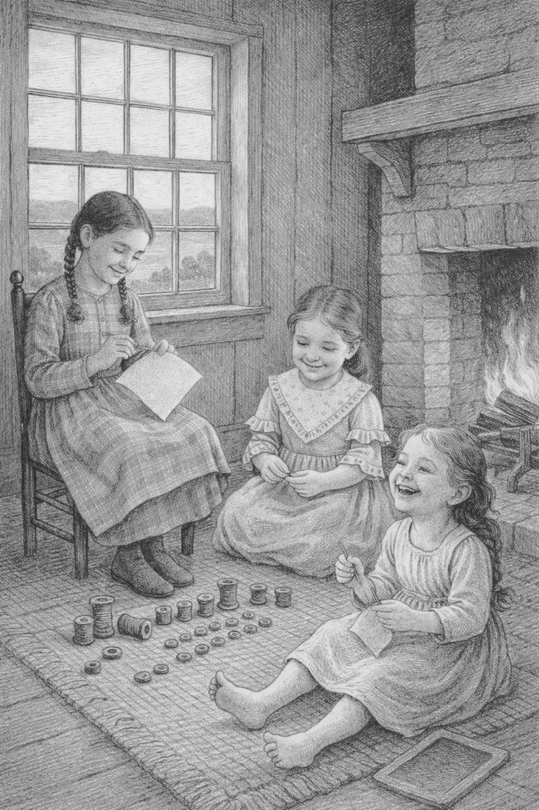

Study Guide Preview. For printing or classroom distribution, please use the downloadable PDF version.
The story of The Prescott Girls takes place in Maine during the 1830s, a time when many communities were small, travel was slow, and daily life depended closely on the land and nearby rivers.
Although Maine had become a state in 1820, many parts of the region still felt like frontier communities. Towns were connected by rough roads, rivers served as important transportation routes, and families often depended on one another for support and survival.
Understanding what life was like during this time helps readers imagine the world in which the Prescott sisters lived.
Towns and Communities
Most people in Maine during the early nineteenth century lived in small towns or farming communities.
These towns usually included:
• a meetinghouse or church
• a schoolhouse
• a few stores or trading shops
• farms surrounding the village center
Neighbors often knew one another well and helped each other during planting, harvest, and difficult times.
Travel in the 1830s was very different from today. Most people did not have access to fast or comfortable transportation, and even short trips required planning, patience, and endurance.
Most journeys were made by:
• wagon
• horseback
• walking
• small boats along rivers or the coast
Wagons were commonly used for families traveling together or for moving goods between towns. They were usually pulled by horses or oxen and traveled slowly over uneven roads. In many places, roads were little more than dirt tracks that became muddy after rain and deeply rutted from wagon wheels. In rural areas of Maine, steep hills, forests, and rough ground could make travel especially difficult.
Because travel was slow, people often had to stop along the way to rest the animals, eat, or stay overnight with relatives or at taverns and inns. Even a relatively short distance on a modern map could take a long time to complete.
Rivers were extremely important in early Maine.
The Kennebec River served as a major transportation route, carrying lumber, supplies, and travelers between inland towns and coastal ports.
Coastal towns such as Bath, Wiscasset, and Portland were busy centers of shipbuilding and trade. Ships built in Maine traveled throughout the Atlantic world.
Because of this maritime economy, many Maine families had relatives who worked as:
• sailors
• ship captains
• merchants
• shipbuilders
Life in the 1830s required hard work from every member of the household.
Adults might work as:
• farmers
• teachers
• craftsmen
• merchants
• sailors
Children also helped with daily chores. These could include:
• gathering firewood
• caring for animals
• helping in gardens or fields
• learning household skills such as sewing
Education was important, but children often balanced schoolwork with responsibilities at home.
School and Learning
Many towns had small one-room schoolhouses where children of different ages learned together.
Students studied subjects such as:
• reading
• writing
• arithmetic
• spelling
Girls were also often taught needlework, which helped them learn sewing skills used for clothing and household textiles.
The samplers stitched by the Prescott family are examples of the kinds of needlework girls learned during this time.
Families in the early nineteenth century were usually large and closely connected. Brothers, sisters, cousins, aunts, uncles, and grandparents often lived near one another, sometimes on neighboring farms or even under the same roof. Because travel was slow and communities were smaller, family networks played an important role in daily life.
When difficult events occurred, such as illness, financial hardship, or the death of a parent, extended family members frequently stepped in to help. Relatives might take in children, share household responsibilities, or combine resources so that everyone could continue to manage the work of farming, cooking, and caring for younger family members. These arrangements were not unusual and were often seen as a natural part of family life.
After their father died in 1833, the Prescott girls moved with their mother to live with relatives at the Old Pownalborough Court House in Dresden. Although the building had once served as a courthouse, by that time parts of it were being used as living space for members of the Prescott and Johnson families.
Learning about daily life in Maine during the 1830s helps readers understand the world in which the Prescott sisters lived.
It shows how people traveled, worked, learned, and supported one another in their communities. By studying these details, we gain a clearer picture of the lives of ordinary families in early American history.
Imagine spending one week living in a small Maine town in the 1830s.
Write a short description of what your daily routine might look like. Consider:
• how you would travel
• what chores you might help with
• what school might be like
• what your town might look like